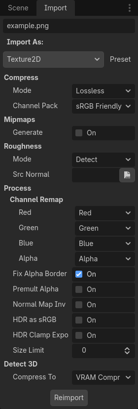
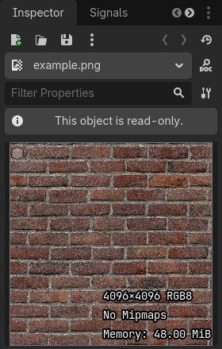
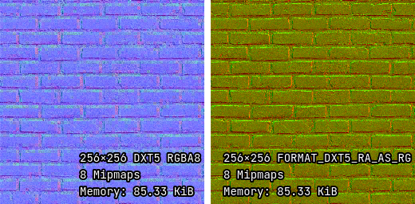
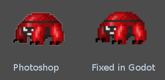

Import hình ảnh
Các định dạng ảnh được hỗ trợ
Godot có thể import các định dạng ảnh sau:
Raster:
BMP (
.bmp) - Hỗ trợ mọi định dạng điểm ảnh, nhưng không hỗ trợ nén RLE.DirectDraw Surface (
.dds) - Nếu texture có mipmap, chúng sẽ được tải trực tiếp. Điều này có thể dùng để tạo hiệu ứng bằng mipmap tùy chỉnh.Khronos Texture (
.ktx) - Giải mã được thực hiện bằng libktx. Chỉ hỗ trợ ảnh 2D. Không hỗ trợ cubemap, texture array và de-padding.OpenEXR (
.exr) - Hỗ trợ HDR (rất nên dùng cho bầu trời panorama).Radiance HDR (
.hdr) - Hỗ trợ HDR (rất nên dùng cho bầu trời panorama).JPEG (
.jpg,.jpeg) - Không hỗ trợ độ trong suốt do giới hạn của định dạng.PNG (
.png) - Độ chính xác bị giới hạn ở 8 bit mỗi kênh khi import (không có ảnh HDR).Truevision Targa (
.tga)WebP (
.webp) - Tệp WebP hỗ trợ độ trong suốt và có thể nén có mất dữ liệu hoặc không mất dữ liệu. Độ chính xác bị giới hạn ở 8 bit mỗi kênh.
Vector:
SVG (
.svg)Theo mặc định, SVG được raster hóa lúc import.
SVG là định dạng ảnh duy nhất có thể được import thành DPITexture, cho phép raster hóa lúc chạy để khớp với hệ số oversampling hiện tại. Xem Thay đổi kiểu import để biết chi tiết.
Godot dùng thư viện ThorVG để kết xuất SVG. Mức hỗ trợ tính năng SVG còn hạn chế; các vector phức tạp có thể không được kết xuất đúng. Văn bản phải được chuyển thành path; nếu không, nó sẽ không xuất hiện trong ảnh đã raster hóa. Với vector phức tạp, kết xuất chúng thành PNG bằng Inkscape thường là giải pháp tốt hơn. Việc này có thể được tự động hóa nhờ giao diện dòng lệnh của nó.
Bạn có thể kiểm tra liệu ThorVG có kết xuất đúng một vector nào đó hay không bằng trình xem trên web của nó.
Ghi chú
Nếu bạn đã biên dịch trình chỉnh sửa Godot từ mã nguồn với một số module bị tắt, một vài định dạng có thể không khả dụng.
Import texture
Hành động mặc định trong Godot là import ảnh thành texture. Texture được lưu trong bộ nhớ video. Dữ liệu điểm ảnh của chúng không thể được truy cập trực tiếp từ CPU nếu không chuyển chúng ngược lại thành class_Image trong script. Đây là điều giúp việc vẽ chúng hiệu quả.
Có hơn chục tùy chọn import có thể điều chỉnh sau khi chọn một ảnh trong FileSystem dock:

Các tùy chọn import trong Import dock sau khi chọn một ảnh trong FileSystem dock. Một số tùy chọn chỉ hiển thị với một số chế độ nén nhất định.
Thay đổi kiểu import
Bạn có thể chọn các kiểu resource được import khác trong Import dock:
BitMap: Texture đơn sắc 1-bit (dùng làm mặt nạ nhấp chuột trong class_TextureButton và class_TouchScreenButton). Kiểu resource này không thể hiển thị trực tiếp lên node 2D hoặc 3D, nhưng có thể truy vấn giá trị điểm ảnh từ script bằng get_bit.
Cubemap: Import texture thành một cubemap 6 mặt, có nội suy giữa các mặt của cubemap (cubemap liền mạch), có thể được lấy mẫu trong shader tùy chỉnh.
CubemapArray: Import texture thành một tập hợp các cubemap 6 mặt, có thể được lấy mẫu trong shader tùy chỉnh. Kiểu resource này chỉ hiển thị được khi dùng renderer Forward+ hoặc Mobile, không hiển thị với renderer Compatibility.
DPITexture: Chỉ khả dụng cho ảnh SVG. Tương tự Texture2D, nhưng có thể được raster hóa lại ở các tỷ lệ khác nhau trong trình chỉnh sửa và lúc chạy mà không cần import lại. Xem Oversampling phông chữ và hình ảnh để biết chi tiết.
Font Data (Monospace Image Font): Import ảnh thành một bitmap font trong đó mọi ký tự có cùng độ rộng. Xem Sử dụng font.
Image: Import ảnh nguyên trạng. Kiểu resource này không thể hiển thị trực tiếp lên node 2D hoặc 3D, nhưng có thể truy vấn giá trị điểm ảnh từ script bằng get_pixel.
Texture2D: Import ảnh thành một texture 2 chiều, phù hợp để hiển thị trên các bề mặt 2D và 3D. Đây là chế độ import mặc định.
Texture2DArray: Import ảnh thành một tập hợp các texture 2 chiều. Texture2DArray tương tự texture 3 chiều, nhưng không có nội suy giữa các lớp. Shader 2D và 3D tích hợp sẵn không thể hiển thị texture array, nên bạn phải tạo một shader tùy chỉnh cho 2D hoặc 3D để hiển thị một texture từ texture array.
Texture3D: Import ảnh thành một texture 3 chiều. Đây không phải là texture 2D áp lên bề mặt 3D. Texture3D tương tự texture array, nhưng có nội suy giữa các lớp. Texture3D thường được dùng cho bản đồ mật độ class_FogMaterial trong sương mù thể tích, trường vector của particle attractor, hiệu chỉnh màu 3D LUT của class_Environment, và shader tùy chỉnh.
TextureAtlas: Import ảnh thành một atlas gồm nhiều texture khác nhau. Có thể dùng để giảm mức dùng bộ nhớ cho sprite 2D có hoạt ảnh. Chỉ được hỗ trợ trong 2D do shader 3D tích hợp sẵn không hỗ trợ.
Với Cubemap, thứ tự ảnh mong đợi là X+, X-, Y+, Y-, Z+, Z- (theo hệ tọa độ của Godot, nên Y+ là "lên" và Z- là "phía trước"). Dưới đây là các mẫu bạn có thể dùng cho ảnh cubemap (nhấp chuột phải > Save Link As…):
Detect 3D
Các tùy chọn import mặc định (không có mipmap và nén Lossless) phù hợp cho 2D, nhưng không lý tưởng cho hầu hết dự án 3D. Detect 3D giúp Godot nhận biết khi một texture được dùng trong scene 3D (chẳng hạn texture trong một class_BaseMaterial3D). Khi điều này xảy ra, một số tùy chọn import sẽ được thay đổi để các cờ của texture phù hợp hơn với 3D. Mipmap được bật và chế độ nén được đổi thành VRAM Compressed trừ khi Detect 3D > Compress To được thay đổi. Texture cũng được import lại tự động.
Một thông báo sẽ được in ra Output panel khi phát hiện một texture được dùng trong 3D.
Nếu bạn gặp vấn đề về chất lượng khi một texture bị phát hiện là được dùng trong 3D (ví dụ với texture pixel art), hãy thay đổi tùy chọn Detect 3D > Compress To trước khi dùng texture trong 3D, hoặc đổi Compress > Mode thành Lossless sau khi dùng texture trong 3D. Cách này tốt hơn việc tắt Detect 3D, vì việc tạo mipmap vẫn được bật để texture không trông lổn nhổn khi nhìn từ xa.
Tùy chọn import
Xem thêm
Từ Godot 4.0, chế độ lọc và lặp của texture được đặt trong các thuộc tính CanvasItem ở 2D (với một cài đặt dự án đóng vai trò giá trị mặc định), và trong cấu hình theo từng material ở 3D. Trong shader tùy chỉnh, chế độ lọc và lặp được thay đổi trên uniform sampler2D bằng các hint được mô tả trong tài liệu Ngôn ngữ shader.
Compress > Mode
Hình ảnh là một trong những asset lớn nhất trong game. Để xử lý chúng hiệu quả, chúng cần được nén. Godot cung cấp một số phương pháp nén, tùy theo trường hợp sử dụng.
Lossless: Đây là chế độ nén mặc định và phổ biến nhất cho asset 2D. Nó hiển thị asset mà không có bất kỳ artifact nào, và mức nén trên đĩa ở mức khá. Tuy nhiên, nó sẽ dùng nhiều bộ nhớ video hơn đáng kể so với nén VRAM. Đây cũng là cài đặt được khuyến nghị cho pixel art.
Lossy: Đây là lựa chọn tốt cho asset 2D lớn. Nó có một số artifact, nhưng ít hơn nén VRAM, và kích thước tệp nhỏ hơn vài lần so với Lossless hoặc VRAM Uncompressed. Chế độ này không làm giảm mức dùng bộ nhớ video; mức dùng giống như với Lossless hoặc VRAM Uncompressed.
VRAM Compressed: Đây là chế độ nén mặc định và phổ biến nhất cho asset 3D. Kích thước trên đĩa được giảm và mức dùng bộ nhớ video cũng giảm đáng kể (thường từ 4 đến 6 lần). Nên tránh dùng chế độ này cho 2D vì nó gây ra artifact dễ thấy, đặc biệt với texture độ phân giải thấp.
VRAM Uncompressed: Chỉ hữu ích cho các định dạng không thể nén, như ảnh số thực (floating-point) thô.
Basis Universal: Chế độ nén VRAM thay thế này mã hóa texture sang một định dạng có thể được chuyển mã sang hầu hết các định dạng nén GPU lúc tải. Điều này cho tệp rất nhỏ mà vẫn tận dụng được nén VRAM, đổi lại chất lượng thấp hơn so với VRAM Compressed và thời gian nén chậm. Mức dùng VRAM thường giống với VRAM Compressed. Basis Universal không hỗ trợ định dạng ảnh số thực (engine sẽ tự động chuyển về VRAM Compressed).
Ghi chú
Ngay cả trong 3D, texture "pixel art" nên tắt nén VRAM vì nó sẽ ảnh hưởng xấu đến vẻ ngoài của chúng, mà không cải thiện hiệu năng đáng kể do độ phân giải thấp của chúng.
Trong bảng này, mỗi tùy chọn trong số 5 tùy chọn được mô tả cùng với ưu và nhược điểm ( = tốt nhất,  = tệ nhất):
= tệ nhất):
Chế độ nén |
Lossless |
Lossy |
VRAM Compressed |
VRAM Uncompressed |
Basis Universal |
|---|---|---|---|---|---|
Mô tả |
Lưu dưới dạng WebP / PNG không mất dữ liệu |
Lưu dưới dạng WebP có mất dữ liệu |
Lưu dưới dạng S3TC, BPTC hoặc ETC2 tùy nền tảng |
Lưu dưới dạng điểm ảnh thô |
Chuyển mã sang định dạng VRAM Compressed |
Kích thước trên đĩa |
|
Rất nhỏ |
|
|
Rất nhỏ |
Mức dùng bộ nhớ |
|
|
Nhỏ |
|
Nhỏ |
Hiệu năng |
|
|
Nhanh |
|
Nhanh |
Mất chất lượng |
Không |
|
|
Không |
|
Thời gian tải |
|
|
Nhanh |
|
|
 Nhỏ
Nhỏ


Mức dùng bộ nhớ ước tính cho một texture RGBA8 duy nhất có bật mipmap:
Kích thước texture |
Lossless |
Lossy |
VRAM Compressed |
VRAM Uncompressed |
Basis Universal |
|---|---|---|---|---|---|
128×128 |
85 KiB |
85 KiB |
21 KiB |
85 KiB |
21 KiB |
256×256 |
341 KiB |
341 KiB |
85 KiB |
341 KiB |
85 KiB |
512×512 |
1.33 MiB |
1.33 MiB |
341 KiB |
1.33 MiB |
341 KiB |
1024×1024 |
|
|
1.33 MiB |
|
1.33 MiB |
2048×2048 |
|
|
|
|
|
4096×4096 |
|
|
|
|
|
Ghi chú
Trong bảng trên, mức dùng bộ nhớ sẽ giảm 25% với ảnh không có kênh alpha (RGB8). Mức dùng bộ nhớ sẽ giảm thêm 25% với ảnh tắt mipmap.
Hãy để ý rằng ở độ phân giải lớn hơn, tác động của nén VRAM lớn hơn nhiều. Với tỷ lệ nén 4:1 (6:1 cho texture không trong suốt dùng S3TC), nén VRAM thực tế cho phép một texture lớn gấp đôi trên mỗi trục trong khi dùng cùng lượng bộ nhớ trên GPU.
Nén VRAM cũng giảm băng thông bộ nhớ cần để lấy mẫu texture, có thể tăng tốc kết xuất trong các tình huống bị giới hạn băng thông bộ nhớ (thường gặp trên đồ họa tích hợp và thiết bị di động). Những yếu tố này kết hợp lại khiến nén VRAM trở thành thứ bắt buộc phải có với game 3D dùng texture độ phân giải cao.
Bạn có thể xem trước lượng bộ nhớ một texture chiếm bằng cách nhấp đúp vào nó trong FileSystem dock, rồi xem trong Inspector:

Xem trước một texture trong Inspector. Nguồn: Red Brick 03 - Poly Haven
Compress > High Quality
Ghi chú
Nén texture VRAM chất lượng cao chỉ được hỗ trợ trong renderer Forward+ và Mobile.
Khi dùng renderer Compatibility, tùy chọn này luôn được xem là đã tắt.
Nếu được bật, dùng nén BPTC trên nền tảng desktop và nén ASTC trên nền tảng di động. Khi dùng BPTC, BC7 được dùng cho texture SDR và BC6H được dùng cho texture HDR.
Nếu bị tắt (mặc định), dùng nén S3TC nhanh hơn nhưng chất lượng thấp hơn trên nền tảng desktop và ETC2 trên nền tảng di động/web. Khi dùng S3TC, DXT1 (BC1) được dùng cho texture không trong suốt và DXT5 (BC3) được dùng cho texture trong suốt hoặc normal map (RGTC).
BPTC và ASTC hỗ trợ nén VRAM cho texture HDR, còn S3TC và ETC2 thì không (xem HDR Compression bên dưới).
Compress > HDR Compression
Ghi chú
Tùy chọn này chỉ có tác dụng với các texture được import dưới định dạng HDR trong Godot (tệp .hdr và .exr).
Nếu đặt thành Disabled, không bao giờ dùng nén VRAM cho texture HDR, bất kể chúng trong suốt hay không. Thay vào đó, texture được chuyển sang RGBE9995 (9 bit mỗi kênh + 5 bit số mũ = 32 bit mỗi điểm ảnh) để giảm mức dùng bộ nhớ so với định dạng ảnh half-float hoặc float độ chính xác đơn.
Nếu đặt thành Opaque Only (mặc định), chỉ dùng nén VRAM cho texture HDR không trong suốt. Điều này là do giới hạn của các định dạng HDR, vì không có định dạng HDR nén VRAM nào đồng thời hỗ trợ độ trong suốt.
Nếu đặt thành Always, sẽ buộc nén VRAM ngay cả với texture HDR có kênh alpha. Để làm vậy, kênh alpha sẽ bị loại bỏ khi import.
Compress > Normal Map
Khi dùng một texture làm normal map, chỉ cần kênh đỏ và xanh lá. Do các thuật toán nén texture thông thường tạo ra artifact trông không đẹp lắm trên normal map, định dạng nén RGTC là phù hợp nhất cho loại dữ liệu này. Đặt tùy chọn này thành Enable sẽ khiến Godot import ảnh dưới dạng nén RGTC. Theo mặc định, nó được đặt là Detect. Điều này có nghĩa nếu texture từng bị phát hiện là được dùng làm normal map, nó sẽ được đổi thành Enable và import lại tự động.
Lưu ý rằng nén RGTC ảnh hưởng đến ảnh normal map kết quả. Bạn sẽ phải điều chỉnh các shader tùy chỉnh có dùng kênh xanh dương của normal map để tính đến điều này. Các shader material tích hợp sẵn vốn đã bỏ qua kênh xanh dương trong normal map (bất kể nội dung thực tế của normal map).
Trong ví dụ dưới đây, normal map dùng nén RGTC giữ được chi tiết tốt hơn nhiều, trong khi dùng cùng lượng bộ nhớ như một texture RGBA nén VRAM tiêu chuẩn:

Normal map với nén VRAM tiêu chuẩn (trái) và với nén VRAM RGTC (phải)
Ghi chú
Godot yêu cầu normal map dùng tọa độ X+, Y+ và Z+, gọi là normal map kiểu OpenGL. Nếu bạn đã import một material được tạo cho engine khác, nó có thể là kiểu DirectX. Trong trường hợp này, cần chuyển đổi normal map bằng cách bật tùy chọn import Normal Map Invert Y.
Bạn có thể tìm thêm thông tin về normal map (bao gồm bảng thứ tự tọa độ của các engine phổ biến) tại đây.
Compress > Channel Pack
Nếu đặt thành sRGB Friendly (mặc định), ngăn việc dùng định dạng màu RG vì nó không hỗ trợ màu sRGB.
Nếu đặt thành Optimized, cho phép dùng định dạng màu RG nếu texture không dùng kênh xanh dương.
Tùy chọn thứ ba Normal Map (RG Channels) chỉ khả dụng với texture nhiều lớp (class_Cubemap, class_CubemapArray, class_Texture2DArray và class_Texture3D). Tùy chọn này buộc mọi lớp của texture được import với định dạng màu RG, chỉ giữ lại kênh đỏ và xanh lá. Nén RGTC giữ được chi tiết tốt hơn nhiều, trong khi dùng cùng lượng bộ nhớ như một texture RGBA nén VRAM tiêu chuẩn. Tùy chọn này chỉ có tác dụng với texture dùng chế độ nén VRAM Compressed hoặc Basis Universal.
Mipmaps > Generate
Nếu được bật, các phiên bản nhỏ hơn của texture sẽ được tạo khi import. Ví dụ, một texture 64×64 sẽ tạo 6 mipmap (32×32, 16×16, 8×8, 4×4, 2×2, 1×1). Điều này có một số lợi ích:
Texture sẽ không bị lổn nhổn khi ở xa (trong 3D), hoặc khi bị thu nhỏ do zoom camera hay tỷ lệ của CanvasItem (trong 2D).
Hiệu năng sẽ được cải thiện nếu texture được hiển thị ở xa, vì lấy mẫu các phiên bản nhỏ hơn của texture gốc nhanh hơn và cần ít băng thông bộ nhớ hơn.
Nhược điểm của mipmap là chúng làm tăng mức sử dụng bộ nhớ khoảng 33%.
Bạn nên bật mipmap trong 3D. Tuy nhiên, trong 2D, chỉ nên bật tùy chọn này nếu dự án của bạn thực sự được lợi rõ rệt từ việc bật mipmap. Nếu camera không bao giờ thu nhỏ (zoom out) đáng kể, việc bật mipmap sẽ không mang lại lợi ích gì nhưng mức sử dụng bộ nhớ lại tăng lên.
Mipmaps > Limit
Cảnh báo
Mipmaps > Limit hiện chưa được triển khai và không có tác dụng khi thay đổi.
Nếu được đặt thành giá trị lớn hơn -1, tùy chọn này giới hạn số lượng mipmap tối đa có thể được tạo ra. Bạn có thể giảm giá trị này nếu không muốn texture trở nên quá thấp độ phân giải ở khoảng cách rất xa, đổi lại hình ảnh sẽ hơi bị nhiễu hạt.
Roughness > Mode
Kênh màu được dùng làm roughness map trong texture này. Chỉ có tác dụng nếu Roughness > Src Normal không để trống.
Roughness > Src Normal
Đường dẫn tới texture được dùng làm normal map cho việc lọc roughness khi import. Chỉ định tùy chọn này có thể giúp giảm nhẹ hiện tượng răng cưa phản xạ (specular aliasing) trong 3D.
Lọc roughness khi import chỉ được dùng trong kết xuất 3D, không dùng cho 2D.
Process > Fix Alpha Border
Tùy chọn này đặt các pixel có cùng màu với vùng xung quanh vào phần chuyển tiếp từ vùng trong suốt sang vùng đục. Với các texture được hiển thị bằng bộ lọc song tuyến (bilinear), điều này giúp giảm hiệu ứng viền khi xuất ảnh từ trình chỉnh sửa ảnh.

Bạn nên để tùy chọn này bật (như mặc định), trừ khi nó gây ra vấn đề với một ảnh cụ thể nào đó.
Process > Premult Alpha
Một cách khác thay cho việc sửa viền bị tối bằng Fix Alpha Border là dùng premultiplied alpha. Khi bật tùy chọn này, texture sẽ được chuyển sang định dạng đó. Texture dùng premultiplied alpha cần các material cụ thể để hiển thị đúng:
Trong 2D, bạn cần tạo một class_CanvasItemMaterial và cấu hình nó dùng chế độ hòa trộn Premultiplied Alpha trên các CanvasItem sử dụng texture này. Trong shader canvas item tùy chỉnh, hãy dùng
render_mode blend_premul_alpha;.Trong 3D, bạn cần tạo một class_BaseMaterial3D và cấu hình nó dùng chế độ hòa trộn Premult Alpha trên các material sử dụng texture này. Trong shader spatial tùy chỉnh, hãy dùng
render_mode blend_premul_alpha;.
Process > Normal Map Invert Y
Godot yêu cầu normal map dùng tọa độ X+, Y+ và Z+, gọi là normal map kiểu OpenGL. Nếu bạn đã import một material được tạo cho engine khác, nó có thể là kiểu DirectX. Trong trường hợp này, cần chuyển đổi normal map bằng cách bật tùy chọn import Normal Map Invert Y.
Bạn có thể tìm thêm thông tin về normal map (bao gồm bảng thứ tự tọa độ của các engine phổ biến) tại đây.
Process > HDR as sRGB
Một số ảnh HDR bạn tìm thấy trên mạng có thể bị lỗi và chứa dữ liệu màu sRGB (thay vì dữ liệu màu tuyến tính). Bạn không nên dùng những tệp đó. Nếu thật sự bắt buộc phải dùng, việc bật tùy chọn này sẽ giúp chúng hiển thị đúng.
Cảnh báo
Bật HDR as sRGB trên các ảnh HDR có định dạng chuẩn sẽ khiến ảnh kết quả trông quá tối, vì vậy hãy để tắt nếu bạn không chắc chắn.
Process > HDR Clamp Exposure
Một số ảnh panorama HDR bạn tìm thấy trên mạng có thể chứa các pixel cực sáng, do được chụp từ nguồn thực tế mà không hề bị cắt ngưỡng (clipping).
Mặc dù các ảnh panorama HDR này chính xác so với thực tế, chúng có thể khiến radiance map do Godot tạo ra chứa các đốm lấp lánh khi được dùng làm bầu trời nền. Điều này có thể thấy trong phản xạ của material (thậm chí trên cả material nhám trong trường hợp cực đoan). Bật HDR Clamp Exposure có thể khắc phục điều này bằng một công thức giới hạn thông minh không gây ra hiện tượng cắt ngưỡng thấy được – hiệu ứng glow vẫn hoạt động khi nhìn vào bầu trời nền.
Process > Size Limit
Nếu được đặt thành giá trị lớn hơn 0, kích thước của texture sẽ bị giới hạn khi import thành giá trị nhỏ hơn hoặc bằng giá trị được chỉ định ở đây. Với texture không vuông, giới hạn kích thước áp dụng cho chiều dài hơn, còn chiều ngắn hơn được co giãn để giữ nguyên tỉ lệ khung hình. Việc thay đổi kích thước được thực hiện bằng nội suy bậc ba (cubic interpolation).
Tùy chọn này có thể được dùng để giảm mức sử dụng bộ nhớ mà không ảnh hưởng tới ảnh nguồn, hoặc để tránh lỗi texture không hiển thị trên nền tảng di động/web (vì các nền tảng này thường không thể hiển thị texture lớn hơn 4096×4096).
Detect 3D > Compress To
Tùy chọn này thay đổi giá trị Compress > Mode được dùng khi phát hiện texture đang được sử dụng trong 3D.
Thay đổi tùy chọn import này chỉ có tác dụng nếu texture được phát hiện là đang được dùng trong 3D. Đổi tùy chọn này thành Disabled rồi import lại sẽ không thay đổi chế độ nén hiện có của texture (nếu texture được phát hiện là dùng trong 3D), nhưng chọn VRAM Compressed hoặc Basis Universal thì sẽ thay đổi.
SVG > Scale
Tùy chọn này chỉ có với ảnh SVG.
Tỉ lệ dùng để kết xuất SVG, với 1.0 là kích thước thiết kế gốc. Giá trị càng cao thì ảnh càng lớn. Lưu ý rằng khác với oversampling của font, tùy chọn này ảnh hưởng tới kích thước thực tế mà SVG được kết xuất trong 2D. Xem thêm Editor > Scale With Editor Scale bên dưới.
Editor > Scale With Editor Scale
Tùy chọn này chỉ có với ảnh SVG.
Nếu bật, ảnh được import sẽ được co giãn theo hệ số tỉ lệ hiển thị của trình chỉnh sửa. Nên bật tùy chọn này cho icon của plugin trình chỉnh sửa và icon lớp tùy chỉnh, còn lại thì nên để tắt.
Editor > Convert Colors With Editor Theme
Tùy chọn này chỉ có với ảnh SVG.
Nếu được chọn, màu của ảnh được import sẽ được chuyển đổi cho khớp với bảng màu icon và font của trình chỉnh sửa. Điều này giả định ảnh dùng chính xác các màu giống với bảng màu riêng của Godot cho icon trình chỉnh sửa, với tệp nguồn được thiết kế cho theme tối của trình chỉnh sửa. Nên bật tùy chọn này cho icon của plugin trình chỉnh sửa và icon lớp tùy chỉnh, còn lại thì nên để tắt.
Import ảnh SVG có chứa chữ
Vì thư viện SVG dùng trong Godot không hỗ trợ raster hóa văn bản có trong ảnh SVG, văn bản phải được chuyển thành path trước. Nếu không, văn bản sẽ không xuất hiện trong ảnh đã raster hóa.
Có hai cách để làm điều này mà không phá hủy dữ liệu gốc, nhờ đó bạn vẫn có thể tiếp tục chỉnh sửa văn bản gốc sau này:
Chọn đối tượng văn bản của bạn trong Inkscape, sau đó nhân bản nó tại chỗ bằng cách nhấn Ctrl + D và dùng Path > Object to Path. Sau đó ẩn đối tượng văn bản gốc bằng dock Layers and Objects.
Dùng dòng lệnh Inkscape để xuất một SVG từ một tệp SVG khác với văn bản đã được chuyển thành path:
inkscape --export-text-to-path --export-filename svg_with_text_converted_to_path.svg svg_with_text.svg
Thực hành tốt nhất
Hỗ trợ texture độ phân giải cao trong 2D mà không bị lỗi hình ảnh
Để hỗ trợ nhiều độ phân giải với hình ảnh sắc nét ở độ phân giải cao, bạn cần dùng ảnh nguồn có độ phân giải cao (phù hợp với độ phân giải cao nhất bạn muốn hỗ trợ mà không bị mờ, thường là 4K trong các game desktop hiện đại).
Có 2 cách để thực hiện:
Dùng độ phân giải cơ sở cao trong cài đặt dự án (chẳng hạn 4K), rồi dùng texture ở tỉ lệ gốc. Đây là cách dễ hơn.
Dùng độ phân giải cơ sở thấp trong cài đặt dự án (chẳng hạn 1080p), rồi thu nhỏ texture khi sử dụng. Cách này thường khó hơn và có thể khiến nhiều phép tính trong script trở nên phiền phức, vì vậy nên dùng cách được mô tả ở trên.
Sau khi làm vậy, bạn có thể nhận thấy texture bị nhiễu hạt ở độ phân giải viewport thấp hơn. Để khắc phục, hãy bật Mipmaps cho các texture dùng trong 2D ở dock Import. Việc này sẽ làm tăng mức sử dụng bộ nhớ.
Bật mipmap cũng có thể khiến texture trông mờ hơn, nhưng bạn có thể làm texture sắc nét hơn (đổi lại hơi nhiễu hạt) bằng cách đặt Rendering > Textures > Default Filters > Texture Mipmap Bias thành giá trị âm.
Dùng kích thước texture phù hợp trong 3D
Dù không có khuyến nghị nào "áp dụng cho mọi trường hợp", dưới đây là một số khuyến nghị chung khi chọn kích thước texture trong 3D:
Kích thước của texture nên được điều chỉnh để có mật độ texel đồng nhất so với các đối tượng xung quanh. Dù không thể đảm bảo điều này một cách hoàn hảo khi chỉ dùng kích thước texture là lũy thừa của 2, thường vẫn có thể giữ độ chi tiết texture khá đồng đều trong toàn bộ scene 3D.
Đối tượng hiển thị trên màn hình càng nhỏ thì texture của nó càng nên nhỏ. Ví dụ, một cái cây chỉ xuất hiện ở hậu cảnh không cần độ phân giải texture cao bằng các đối tượng khác mà người chơi có thể đi lại gần.
Nên dùng kích thước texture là lũy thừa của 2, nhưng không bắt buộc. Texture không nhất thiết phải vuông – các kích thước như 1024×512 đều chấp nhận được.
Dùng texture kích thước lớn mang lại lợi ích ngày càng giảm, trong khi mức sử dụng bộ nhớ và thời gian tải lại tăng lên. Phần lớn game 3D hiện đại không theo phong cách pixel art trung bình dùng texture 2048×2048, cùng với 1024×1024 và 512×512 cho texture phủ các bề mặt nhỏ hơn.
Khi làm việc với material dựa trên vật lý (physically-based) trong 3D, bạn có thể giảm mức sử dụng bộ nhớ và kích thước tệp mà không ảnh hưởng nhiều tới chất lượng bằng cách dùng độ phân giải thấp hơn cho một số texture map nhất định. Cách này đặc biệt hiệu quả với các texture chỉ có chi tiết tần số thấp (chẳng hạn normal map cho texture tuyết).
Nếu bạn có quyền kiểm soát cách tạo model 3D, những mẹo sau cũng đáng để tìm hiểu:
Khi làm việc với model 3D phần lớn đối xứng, bạn có thể dùng UV đối xứng (mirrored UV) để tăng gấp đôi mật độ texel thực tế. Tuy nhiên, cách này có thể trông không tự nhiên khi dùng trên khuôn mặt người.
Khi làm việc với model 3D theo phong cách low-poly và màu trơn, bạn có thể dùng vertex color thay cho texture để thể hiện màu trên bề mặt model.
Xem thêm
Ảnh có thể được tải và lưu lúc runtime bằng cách tải và lưu tệp lúc runtime, kể cả từ một dự án đã xuất.